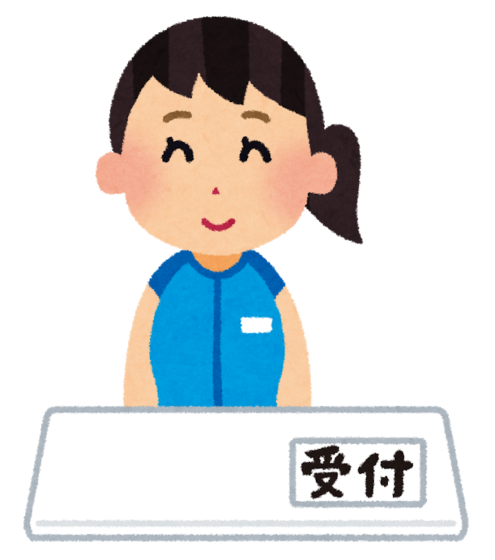
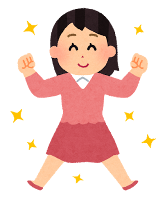
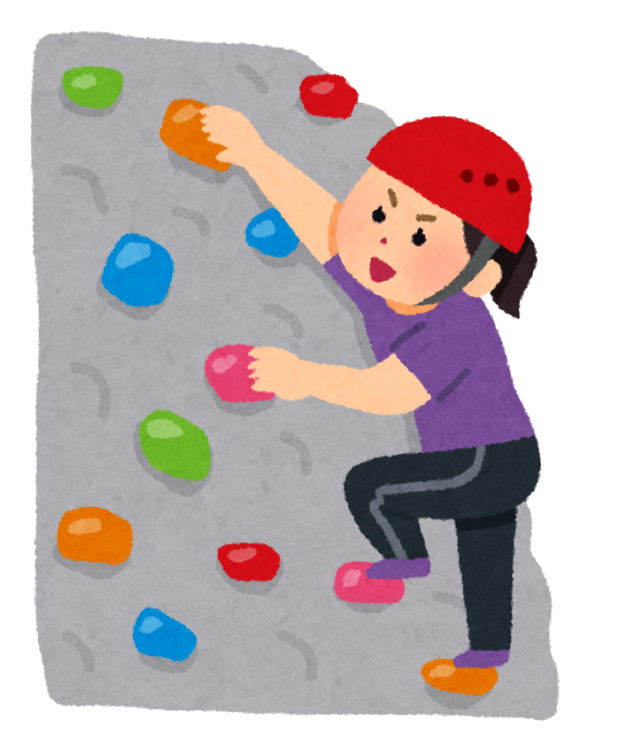

大妻女子大学社会情報学部社会情報学科情報デザイン専攻の村松玲那です。
| 私の強み | ★★★★★ |
|---|---|
| ① | 真面目なところ |
| ② | 最後までやり遂げるところ |
| ③ | チャレンジ精神 |
アルバイト

私は、セントラルフィットネスクラブで受付のアルバイトをしています。ここで臨機応変に対処する力や周りを見る能力など社会に出て役立つ基礎が身につきました。
ストレス発散方法

私のストレス発散方法は大きな声で挨拶することです。受付のアルバイトをしているので遠くまで声が聞こえるように意識しています。落ち込むことがあっても声を出すとスッキリします。
趣味

ボルダリングに熱中しています。
始めた当初は、握力も筋力もなく上手く登ることが出来ませんでしたが腕の力以外にも体幹を鍛えることやどのように登るのかイメージすることが大切だと気がつきました。課題を発見し解決方法を探すことが面白いです。